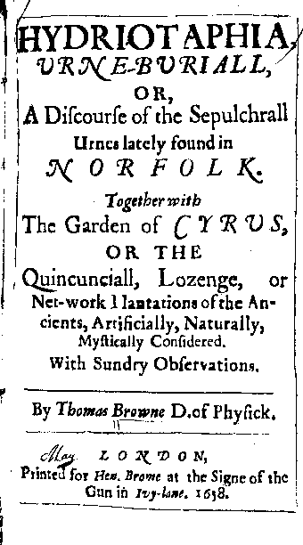

17th century English physician-philosopher obsessed with the Law of Fives
So Eris shewed me this book called the “The Garden of Cyrus” by a Sir Thomas Browne (a Christian of the Hermetic tradition). I haven’t had the time to read this fully, but the fifth and final chapter of this little book deals exclusively with the mystical significance of the Number Five. Apparently some also call this an early example of Stream of Consciousness (but I cannot confirm or deny this first hand).
